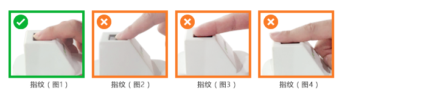

人脸建模认证操作说明
1 范围
本要求规定了中华人民共和国社会保障卡数字相片的样式、规格及其它相关要求。
本要求适用于中华人民共和国社会保障卡的受理、制证及应用系统的开发与建设。
2 样式、规格及要求
2.1 样式及规格
标准数字相片样式见图1。

图1
2.1.1 规格
358×441 ，分辨率350DPI。
2.1.2 颜色模式
24位RGB真彩色。
2.1.3压缩方式
采用JPEG压缩技术，压缩品质因子70(品质因子取值范围0～100)，一般相片的文件大小为14K~40K。
2.1.4头像大小及位置
头像在数字相片矩形框内水平居中，脸部宽度193～221像素，头顶发迹距离数字相片上边缘7～21像素， 双眼连线中点距离数字相片左边缘为162～196像素，双眼连线距离数字相片下边缘的最短距离不小于207像素(儿童不小于176像素)，(当头顶距离数字相片上边缘与眼睛距离下边沿不能同时满足要求时，特殊情况下可切除部分耸立过高的头发)。
2.1.5一般性要求
中华人民共和国社会保障卡数字相片，是申领人在近六个月之内通过数码照相或扫描采集的正面免冠彩色头像文件。
要求：
l 人像头部占数字相片尺寸的2/3左右，坐姿端正、表情自然、双眼平视镜头、露双肩并等高；人像清晰、无明显畸变或异常；
l 数字相片应布光均匀，对比度和亮度适当，人像面部不偏色，相片中无阴影、亮点、反光以及红眼；
l 人像五官（眼、耳、鼻、口、眉）须清楚可见，不被头发遮挡；不佩戴耳环、头巾、项链等饰物；若因宗教或医学因素不能摘除的，应保证人像面部特征（眼、鼻、口、眉）可见；
l 常戴眼镜者应佩戴无色镜片、浅色窄边镜框的眼镜，避免反光并确保眼睛清晰可见；
l 着装颜色应区别于白色背景，衣服领口不要过低、过大；
l 数字相片不能出现申领人之外的物体，如玩具、椅背、他人及其它物品等。
l 数字相片应反映申领人的真实面貌，不要用图像处理工具对人像面部的重要特征（如：痣、胎记、皱纹、疤痕等）进行修改。
样图详见附录1
2.1.6 背景、边框
白色背景，无边框。
2.1.7 清晰度
人像轮廓及面部特征点清晰可见。
相片样本及规范说明
1. 裁切后的图像需符合头像大小要求

2. 人像需正面露双肩，双肩需等高，

3. 双眼睁开正视前方并保证瞳孔清楚可见

4. 背景需为纯白色

5. 人像需为中性表情，可微笑，但不建议露齿。

6. 人像清晰、色彩自然、层次丰富、无明显畸变。在脸部或背景上无阴影、亮点或反光；对比度和亮度适当。

7. 常戴眼镜者应佩戴无色镜片、浅色窄边镜框的眼镜，避免反光并确保眼睛清晰可见

8. 人像五官(眼、耳、鼻、口、眉)须清楚可见，不被头发遮挡；不佩戴耳环、头巾、项链等饰物

9. 建议穿深色衣服拍照.不要穿颜色过浅以及领口过低、过大之类的衣服拍照

指静脉建模认证操作说明
1. 指静脉建模或认证时手指不要超出模具范围；
2. 手指自然放松展平，然后伸入设备（图1）；指尖不可超出设备识别范围（图2）；指尖不可太过靠后（图3）；手指不能弯曲（图4）；不可用力按压（图5）。

3. 手指适当上抬，不要向下挤压手指，不要紧绷用力前伸，尽量放松。感觉不舒服不放松可以晃动调整一下；
4. 根据设备提示进行采集，从左手到右手，每个手指采集一次。
注意：天气寒冷时，如果个别人员手指太冷（或因为女性人员手指太细）采集不成功，请多搓搓手指，以便顺利进行。
指纹建模认证操作说明
- 为了保证采集效果，请在采集前清洁手指，然后将手指指尖与采集窗口边沿齐平放置。如下图所示：
正确示例：图1
错误示例：图2-4

- 按压力度适中，手指不得晃动或移动，并保持静止不动直至系统提示指纹采集完成。